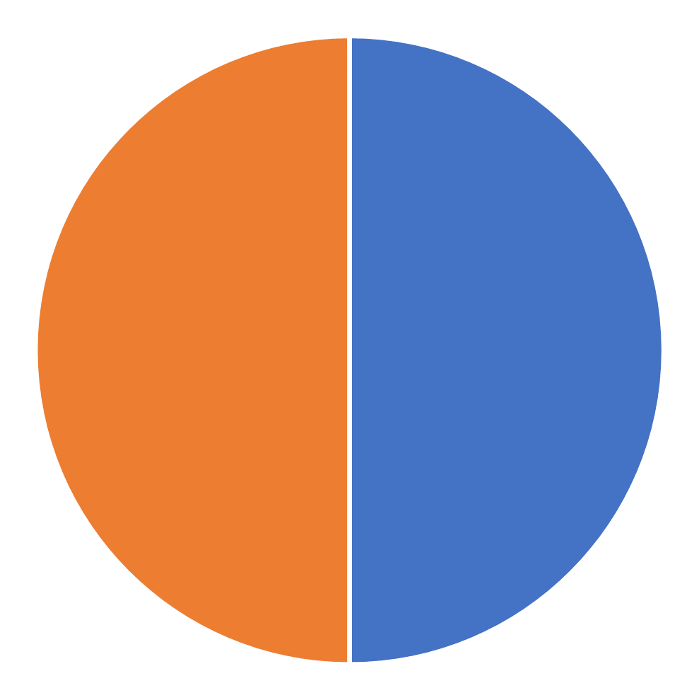

<!DOCTYPE html>
<html>
<head>
    <title>My experiment</title>
    <script src="https://unpkg.com/jspsych@7.3.0"></script>
    <script src="https://unpkg.com/@jspsych/plugin-html-keyboard-response@1.0.0"></script>
    <script src="https://unpkg.com/@jspsych/plugin-image-keyboard-response@1.0.0"></script>
    <script src="https://unpkg.com/@jspsych/plugin-preload@1.0.0"></script>
	<script src="https://unpkg.com/@jspsych-contrib/plugin-pipe"></script>
    <script src="https://unpkg.com/@jspsych/plugin-survey-likert@1.1.2"></script>
    <link href="https://unpkg.com/jspsych@7.0.0/css/jspsych.css" rel="stylesheet" type="text/css" />
</head>
<body>
</body>
<script>

           
    /* initialize jsPsych */
    var jsPsych = initJsPsych({
        on_finish: function () {
            jsPsych.data.displayData();
        }
    });

    /* some variables for DataPipe and sending data to OSF */
    const subject_id = jsPsych.randomization.randomID(10);
    const filename = `${subject_id}.csv`;

    /* create timeline */
    var timeline = [];

    /* randomize between participants (1 = good good, 2 = good bad, 3 = bad good, 4 = bad bad) */
    var cond = Math.floor(Math.random() * 4  + 1);
    jsPsych.data.addProperties({condition: cond});

    /* preload images */
    var preload = {
        type: jsPsychPreload,
        images: ['img/0.png', 'img/25.png', 'img/35.png', 'img/45.png', 'img/55.png', 'img/65.png', 'img/75.png', 'img/100.png', 'img/50.png', 'img/orange.png', 'img/blue.png']
    };
    timeline.push(preload);

    /* define welcome message trial */
    var welcome = {
        type: jsPsychHtmlKeyboardResponse,
        stimulus: "Welcome to the experiment. Press any key to begin."
    };
    timeline.push(welcome);

    /* define instructions trial */
    var instructions = {
        type: jsPsychHtmlKeyboardResponse,
        stimulus: `
        <p>In this exepriment, you will be given information about a light that
        randomly flashes orange or blue throughout the day. Imagine the light as something like this:</p>
        <div></img>
        <p>The total amount of time
        that the light spends in each color on any given day is known, but the color of 
        the light at any given moment is not. Your task is to guess
        whether the light is orange or blue at a given moment knowing 1) daily totals plus 2) information 
        about that specific moment from an experimental sensor of unknown reliability.</p>

        <p>Press any key to continue to an example.</p>
      `,
        post_trial_gap: 500
    };
    timeline.push(instructions);
    var practice = {
        type: jsPsychHtmlKeyboardResponse,
        stimulus: `
        <p>For example, the pie chart below shows that the light was orange for 50% 
        of the day and blue for 50% of the day. For the moment in question, the experimental
        sensor indicates that the light was orange. </P>
        <p>To guess that the light was <b>orange</b> at that momement, press the letter <b>n</b>.</p>
        <p>To guess that the light was <b>blue</b> at that momement, press the letter <b>m</b>.</p>
        <div style='width: 600px; margin: auto;'>
        <div style='width:50%; float:left; bottom: 0;'></img>
        <p class='small'><b>Daily total</b></p></div>
        <div style='margin-left:50%; bottom: 0;'></img>
        <p class='small'><b>Experimental sensor</b></p></div>
        </div>
        <p>Press any key to continue to additional instructions.</p>
      `,
        post_trial_gap: 500
    };
    timeline.push(practice);
    var instructions2 = {
        type: jsPsychHtmlKeyboardResponse,
        stimulus: `
        <p>When you make your decisions, please respond with <b>n</b> (orange) or <b>m</b> (blue) as quickly as possible, while remaining as accurate as possible.</p>

            
        <p>Press any key to begin the experiment.</p>
      `,
        post_trial_gap: 500
    };
    timeline.push(instructions2);

    /* define trial stimuli array for timeline variables 
        Get ground truth first
        Use ground truth to calculate cue (80% accurate or 20% accurate)
    */
    var gt = "None";
    var getGt = function (prob) {
        if (jsPsych.randomization.randomInt(1, 100) <= prob) { gt = 'b'; } else { gt = 'n'; }
        console.log("getGt() = " + gt);
        return gt;
    }

    /* var getCue = function () {
        if (jsPsych.randomization.randomInt(1, 100) <= 80) {
            cue = gt;
            if(gt=='n'){
                sens = "img/orange.png";
            } else {
                sens = "img/blue.png";
            }
        } else if (gt == 'm') {
            cue = 'n';
            sens = "img/orange.png";
        } else {
            cue = 'm';
            sens = "img/blue.png";
        }

        return "<div style='margin-left:50%'></img><p>Sensor says: " + cue + "</p></div><p>Press o for orange, b for blue</p><p>GT: " + gt + "</p>";
    }

    var getBadCue = function () {
        if (jsPsych.randomization.randomInt(1, 100) <= 20) {
            cue = gt;
            if(gt=='n'){
                sens = "img/orange.png";
            } else {
                sens = "img/blue.png";
            }
        } else if (gt == 'm') {
            cue = 'n';
            sens = "img/orange.png";
        } else {
            cue = 'm';
            sens = "img/blue.png";
        }
        return "<div style='margin-left:50%'></img><p>Bad sensor says: " + cue + "</p></div><p>Press n for orange, m for blue</p><p>GT: " + gt + "</p>";
    } */

    var output;
    var getStimulus = function(prob, gb){
        //Get ground truth
        if (jsPsych.randomization.randomInt(1, 100) <= prob) { gt = 'm'; } else { gt = 'n'; };

        var odd = jsPsych.randomization.randomInt(1, 100);
        if (gb == "good"){            
            if (odd <= 80) {//80% chance reliable
                cue = gt;
            } else if (gt == 'm') {//20% chance wrong
                cue = 'n';
            } else {
                cue = 'm';
            }
        } else if (gb == "bad"){
            if (odd <= 20) {//20% chance reliable
                cue = gt;
            } else if (gt == 'm') {//80% chance wrong
                cue = 'n';
            } else {
                cue = 'm';
            }

        }
        if(cue=='n'){
                    sens = "img/orange.png";
                } else {
                    sens = "img/blue.png";
            }
        output = "<h2>What color is the light at this moment?</h2><div style='width: 600px;'><div style='width:50%; float:left; bottom: 0;'></img><p><b>Daily total</b></p></div><div style='margin-left:50%; bottom: 0;'></img><p><b>Experimental sensor</b></p></div></div>";
        
        return {stimulus: output, correct_response: gt };
    }
    //Maybe I want to use non-image keyboard response for more control
    var test_stimuli_g = [
        getStimulus(25,"good") ,
        getStimulus(35,"good") ,
        getStimulus(45,"good") ,
        getStimulus(55,"good") ,
        getStimulus(65,"good") ,
        getStimulus(75,"good") 
    ];
    console.log(test_stimuli_g);
    var test_stimuli_b = [
        getStimulus(25,"bad"), 
        getStimulus(35,"bad"),
        getStimulus(45,"bad"), 
        getStimulus(55,"bad"), 
        getStimulus(65,"bad"), 
        getStimulus(75,"bad")
    ];

    /* define test trials and results*/
    var results = {
        type: jsPsychHtmlKeyboardResponse,
        stimulus: function () {

            var getResp = function(res){
                if(res=="n"){
                    return "orange (n)";
                } else if(res=="m"){
                    return "blue (m)";
                } else {
                    return "ERROR RETRIEVING RESPONSE";
                }
            }

            var alldata = jsPsych.data.get();
            var trialdata = alldata.last(2).first();//Get data from 2 trials ago, n/m
            //console.log(alldata.csv());
            //console.log(trialdata.csv());
            //console.log("trialdata.select('correct'):")
            //console.log(trialdata.select('correct').values[0]);
            if (trialdata.select('correct').values[0]) { var cor = "Correct"; } else { var cor = "Incorrect"; }
            var pie =trialdata.select('stimulus').values[0].substring(48,trialdata.select('stimulus').values[0].length);
            console.log(trialdata.select('stimulus').values[0].substring(48,trialdata.select('stimulus').values[0].length));
            var sensor = trialdata.select('cue').values;
            var resp = getResp(trialdata.select('response').values);

            var trials = jsPsych.data.get().filter({ task: 'response' });
            var correct_trials = trials.filter({ correct: true });
            var accuracy = Math.round(correct_trials.count() / trials.count() * 100);
            var rt = Math.round(correct_trials.select('rt').mean());

           
            return "<h2>Results</h2>" + pie +
                    `<p>Your response: ${resp}</p>
                    <p>${cor}!</p>
                    <p>You responded correctly on ${correct_trials.count()}/${trials.count()} trials (${accuracy}%).</p>
                    <p>Press any key to continue</p>`;

        },
        choices: "ALL_KEYS",
        data: {
            task: 'results'
        }
    };

    var test = {
        type: jsPsychHtmlKeyboardResponse,
        stimulus: jsPsych.timelineVariable('stimulus'),
        stimulus_width: 300,
        choices: ['n', 'm'],
        prompt: "<p>Press <strong>n</strong> for orange or <strong>m</strong> for blue.</p>",
        data: {
            task: 'response',
            //cue: jsPsych.timelineVariable('prompt'),
            correct_response: jsPsych.timelineVariable('correct_response')
        },
        on_finish: function (data) {
            data.correct = jsPsych.pluginAPI.compareKeys(data.response, data.correct_response);
        }
    };

    var confidence = {
        type: jsPsychSurveyLikert,
        questions: [
            {
            prompt: "Rate your confidence in your response.", 
            labels: [
                "Not confident at all", 
                "Slightly confident", 
                "Somewhat confident", 
                "Fairly confident", 
                "Completely confident"
            ]
            }
        ]
    };

    /* define test procedure

Can I get this to change the cue probability for the second half?
Make test proceedures for all 4 and randomly sample which to push to timeline? (Or rotate based on counter or participant ID??)
*/
    var test_procedure_g = {
        timeline: [test, confidence, results],
        timeline_variables: test_stimuli_g,
        repetitions: 1,
        randomize_order: true
    };
    
    var test_procedure_b = {
        timeline: [test, confidence, results],
        timeline_variables: test_stimuli_b,
        repetitions: 1,
        randomize_order: true
    };
    

    switch (cond) {
        case 1:
            timeline.push(test_procedure_g);
            timeline.push(test_procedure_g);
            break;
        case 2:
            timeline.push(test_procedure_g);
            timeline.push(test_procedure_b);
            break;
        case 3:
            timeline.push(test_procedure_b);
            timeline.push(test_procedure_g);
            break;
        case 4:
            timeline.push(test_procedure_b);
            timeline.push(test_procedure_b);
            break;
        default:
            alert("No procedure pushed to timeline.");
            break;

    }


    /* define debrief */
    var debrief_block = {
        type: jsPsychHtmlKeyboardResponse,
        stimulus: function () {

            var trials = jsPsych.data.get().filter({ task: 'response' });
            var correct_trials = trials.filter({ correct: true });
            var accuracy = Math.round(correct_trials.count() / trials.count() * 100);
            var rt = Math.round(correct_trials.select('rt').mean());

            return `<p>You responded correctly on ${accuracy}% of the trials.</p>
          <p>Your average response time was ${rt}ms.</p>
          <p>Press any key to complete the experiment. Thank you!</p>`;

        }
    };
    timeline.push(debrief_block);

	/* send data to OSF (DataPipe) */
    const save_data = {
        type: jsPsychPipe,
        action: "save",
        experiment_id: "kD3R4dl2QWF6",
        filename: filename,
        data_string: ()=>jsPsych.data.get().csv()
    };
    timeline.push(save_data);


    /* start the experiment */
    jsPsych.run(timeline);

</script>
</html>